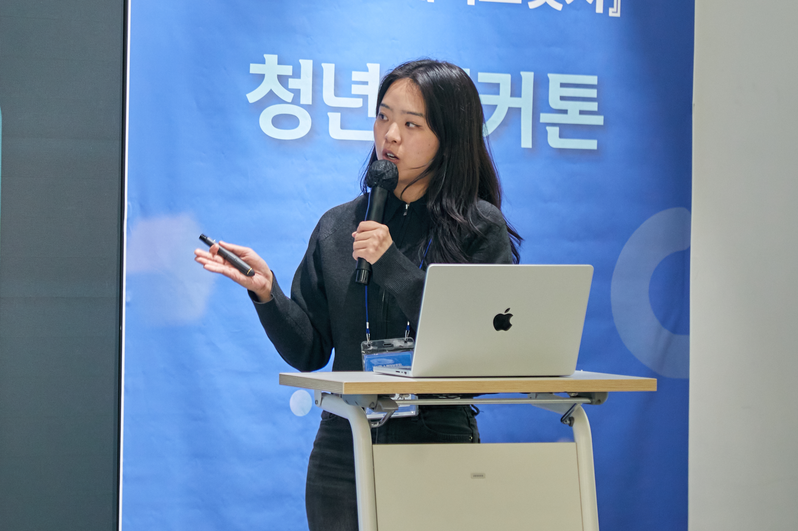
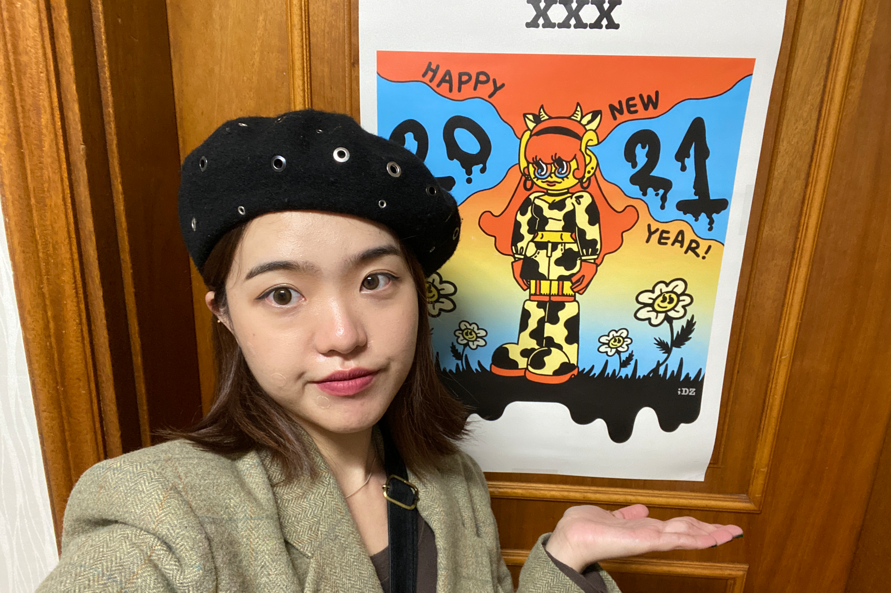

, balancing the functional discipline of UX with an eye for visual craft
. I believe neither one works without the other.What separates a designer from an illustrator, I believe, is intent. Visual instinct has to answer to something bigger: data, market context, and a clear point of view on what the product needs to communicate.
I try to work like a strategist first and a maker second, asking what a decision needs to accomplish before I decide how it should look.
I'm early in my career, and building it deliberately matters to me. I'm looking for a team that pushes my thinking further, in an environment where I can keep growing and becoming a better designer.
All Copyright reserved